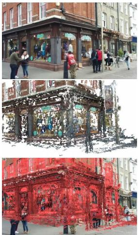
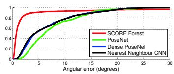

这条支线的起点：PoseNet 与 DeepVO（2015 / 2017）
先纠正一个流行误解：PoseNet 根本不是视觉里程计，它是单张图像的全局重定位；真正开启端到端 VO 的是 DeepVO 🚗
本节目标
分清相机重定位（relocalization，给一张图猜自己在全图的绝对位姿）与视觉里程计（VO，看连续帧估相对运动）这两个本质不同的任务；讲清为什么 PoseNet 不是 VO、而 DeepVO 才是「端到端单目 VO」的开山之作；并记住这一支线后面向「训练信号从哪来」转向的伏笔。
和前面课程怎么接
0011 那句「深度学习先吃掉匹配与检索」在本块变成「位姿战场」——但位姿只被吃掉很窄的一段（本块 0141–0146 的结论）。0054–0056（CNN-SLAM / CodeSLAM / DeepFactors）是「用深度学习当深度/地图」的上一代，都没成主流；本块看 DeepVO 这条线换了什么思路。0004 讲的手工特征匹配（SIFT 那套），正是 PoseNet 想绕开的东西。0024/0025 的 VO 教程告诉你经典 VO 流水线长什么样，等会儿拿来和 DeepVO 对照。
1. 先说人话（助教带读）
想象你在一个大商场里走路，想知道「我现在在地图上的哪个点、面朝哪」。这件事有两种问法：
- 重定位（Relocalization）：你掏出一张单独的照片给系统看，系统直接告诉你「你在中庭西北角、面朝东」。系统得先对整个商场建好模、再认这张图——这是「认地方」。
- 视觉里程计（Visual Odometry, VO）：你不看全局地图，只盯着眼前连续两帧画面，算出「从上一帧到这一帧，我往左挪了半米、转了 3 度」。它不在乎绝对位置，只管「走了多少」——这是「记步数」。
一句话区别：重定位是「我在哪」，答案绝对；VO 是「我走了多少」，答案相对。本课的硬知识点就是——清单里被塞进「端到端 VO」块的 PoseNet，其实干的是前者（重定位），不是后者；真正第一个做端到端 VO 的是 DeepVO。术语先露脸先解释：6-DOF = 6 自由度（3 个平移 x/y/z + 3 个旋转）；位姿 = 位置 + 朝向的合称；端到端 = 从原始图像直接出结果，中间不设人工模块。
2. 它接在谁后面
把第七季这条「位姿支线」的来路拉直：第一季 0004 讲的是 SIFT 式手工特征 + 数据关联；第二季 0024/0025 把 VO 拆成「提特征→匹配→运动估计→BA（光束法平差）」四步；第三季 0054–0056 试着用 CNN 去替换「深度估计」那一段（CNN-SLAM / CodeSLAM / DeepFactors），但始终还挂着经典后端，没成主流。
PoseNet（2015）和 DeepVO（2017）更进一步：干脆把整条流水线压进一个网络。但 PoseNet 压的是「单图→全局位姿」，DeepVO 压的是「连续帧→相对位姿」。下表先把俩任务放一起比，下一节再展开 PoseNet 为什么被误归到 VO。
PoseNet（2015）
输入：单张 RGB 图像。
输出：绝对 6-DOF 位姿（全图坐标）。
本质：相机重定位 / 位姿回归。
训练：需要该场景的 SfM 真值标签。
DeepVO（2017）
输入：连续两帧 RGB 堆叠。
输出：相对 6-DOF 位姿（帧间运动）。
本质：端到端单目 VO。
训练：需要真值位姿序列。
共同点
都用 CNN 直接回归位姿；都号称「免人工特征/免图优化」；都属于「用深度学习替换几何流水线」的第一次大尝试。
关键分叉
单图 vs 序列 → 绝对 vs 相对；这决定了它们一个是「重定位」、一个是「里程计」。后面 0142 起的 VO 支线全部继承自 DeepVO 而非 PoseNet。
3. PoseNet 的真实身份：它不是 VO，是重定位
PoseNet 全称「A Convolutional Network for Real-Time 6-DOF Camera Relocalization」。它的输入是单张 224×224 RGB 图，输出是 7 维向量 p = [x(3), q(4)]（位置 3 维 + 四元数 4 维），也就是「这张图对应的相机在全场景里的绝对位姿」。它要先把整个场景用 SfM 建好模、再认这张图——这和 VO「不看全局、只记步数」是两码事。
原论文也自称是「the first application of deep CNNs to end-to-end 6-DOF camera pose localization」——用的词是 localization（定位），不是 odometry（里程计）。清单把它列在「端到端 VO」块里，属于归类粗糙。本课显式纠正：PoseNet 是 CNN 位姿回归 / 重定位的开山之作，启发了后续 VO；但真正「end-to-end 单目 VO」是 2017 的 DeepVO。
PoseNet 的局限（写进它的自述）：① 需要该场景的训练图像（per-scene 重定位，不是任意场景的 VO）；② 单帧、无时序，因此没有「运动连续性」可借力；③ 网络能定位的物理面积有上限、易过拟合到特定场景布局。图 1 是它的典型结果：输入一张图（上），网络给出重建里的预测位姿（中），再叠回原图红框（下）。

原图注（Fig. 1）：PoseNet: Convolutional neural network monocular camera relocalization. Relocalization results for an input image (top), the predicted camera pose of a visual reconstruction (middle), shown again overlaid in red on the original image (bottom). Our system relocalizes to within approximately 2m and 3° for large outdoor scenes spanning 50,000m².
怎么看这张图：注意它给的是「单张图 → 绝对位姿」：上面是原图，中间是网络在重建模型里给出的相机位置（一个点），下面把那个预测点用红框叠回原图。它回答的是「我在场景的哪个位置」，不是「我相对上一帧走了多少」。
要记住的一句话：PoseNet 一次只吃一张图、吐一个全局位姿——这是重定位，不是里程计。

原图注（Fig. 7）：Localization performance. These figures show our localization accuracy for both position and orientation as a cumulative histogram of errors for the entire testing set. The regression convnet outperforms the nearest neighbour feature matching which demonstrates we regress finer resolution results than given by training. Comparing to the RGB-D SCoRe Forest approach shows that our method is competitive, but outperformed by a more expensive depth approach. Our method does perform better on the hardest few frames, above the 95th percentile, with our worst error lower than the worst error from the SCoRe approach.
怎么看这张图：横轴是误差、纵轴是「误差小于该值的帧占比」。PoseNet（卷积回归）的曲线比最近邻特征匹配（NN）更靠左上，说明大部分帧误差更小。室外大场景约 2m/3°、室内约 0.5m/5°。
要记住的一句话：作为「重定位」它确实准且快（5ms/帧、50MB），但精准的前提是「这个场景训练过」。
4. PoseNet 怎么训：监督信号来自 SfM 标签
PoseNet 是监督学习：真值位姿由 SfM（运动恢复结构）对场景视频自动生成，再靠 ImageNet/Places 分类预训练做迁移学习（解决标注少）。损失直接拿预测位姿和真值位姿比：
这句话在说什么：网络吐出的位置 $\hat{\mathbf x}$ 和真值 $\mathbf x$ 算欧氏距离，四元数 $\hat{\mathbf q}$ 也和归一化后的真值比距离；前面那个 $\beta$ 是个「平衡旋钮」——室外场景位置误差权重 250–2000、室内 120–750，靠网格搜索调，因为「位置和朝向」单位不同、不调会偏科。
所以 PoseNet 的「训练信号」本质是别人用 SfM 标好的位姿。这一点和后面 0142 的 UnDeepVO（不用真值、靠几何自监督）形成鲜明对照，是整条支线的核心矛盾。下面这张表把本课两篇的「损失由哪几项组成、每项在约束什么」摆清楚——这是本块每节都要点名的重点栏。
| 论文 | 监督信号来源 | 损失项 | 每一项在约束什么 |
|---|---|---|---|
| PoseNet | SfM 自动生成的绝对位姿标签 | 位置 L2 + β×四元数 L2 | 预测绝对位置接近真值；预测朝向（四元数）接近真值，β 平衡两者量纲 |
| DeepVO | KITTI 真值位姿序列 | 位置 MSE + κ×朝向 MSE（逐帧累加） | 每帧相对平移与旋转都接近真值；κ=100 压制「朝向比位置更易过拟合」 |
5. DeepVO：真正的端到端 VO 起点
DeepVO（2017）干的事才是「端到端 VO」：把经典 VO 流水线（特征提取→匹配→运动估计→BA，见 0024/0025）整体换成 CNN+RNN，直接从原始 RGB 视频序列回归 6-DOF 相对位姿，作者声称「连相机标定都不需要」。图 1 把经典法和它的端到端法并排画：左边一串手工模块，右边一个 RCNN 一口吞掉序列出位姿。

原图注（Fig. 1）：Architectures of the conventional feature based monocular VO and the proposed end-to-end method. In the proposed method, RCNN takes a sequence of RGB images (video) as input and learns features by CNN for RNN based sequential modelling to estimate poses.
怎么看这张图：左边经典 VO 是「提特征→匹配→几何估计→优化」四段串联；右边 DeepVO 把两帧图堆起来喂进 CNN 提特征，再交给 RNN（LSTM）建模时序，直接出位姿。注意输入是「序列」而非「单图」——这正是它和 PoseNet 的根本不同。
要记住的一句话：DeepVO 吃连续帧、吐相对位姿，是端到端 VO 的开山之作；PoseNet 吃单图、吐绝对位姿，是重定位。
结构细节：输入是两帧连续 RGB 堆叠的张量；CNN 部分 9 个卷积层（从 FlowNet 预训练借特征）；RNN 是两层 LSTM，每层 1000 隐状态。输出每步 6-DOF（平移 3 + 欧拉角 3）。核心洞察是：CNN 学「几何而非外观」的特征，LSTM 把帧间时序动态包进隐状态——作者点明朝向比位置更易过拟合，所以尺度被网络从 KITTI 数据里隐式学会，不需额外对齐。图 4 用「过拟合模型 vs 拟合良好模型」说明这个坑。

原图注（Fig. 4）：Training losses and VO results of two models. Figures in the left and right columns are about the over-fitted and well-fitted models, respectively. (a)-(b) Training and validation losses. (c)-(d) Estimated VO on training data (Sequence 00). (e)-(f) Estimated VO on testing data (Sequence 05).
怎么看这张图：左列训练/验证 loss 差距大（过拟合），测试轨迹（e）明显歪；右列两者贴近（拟合好），测试轨迹（f）贴真值。DeepVO 明确讨论：训练/验证 loss 差距大时测试反而差，朝向尤其容易过拟合。
要记住的一句话：端到端 VO 的第一个大敌不是精度，是过拟合——数据多样性不够就泛化崩。
6. DeepVO 的训练信号：真值位姿监督
DeepVO 同样走监督路线，真值来自 KITTI 位姿序列（Sequence 00–10）。损失是位置与朝向的 MSE 之和，逐帧累加：
这句话在说什么：对整段序列的每一帧 k，把预测平移 $\hat{\mathbf p}_k$ 和预测欧拉角 $\hat{\boldsymbol\varphi}_k$ 分别和真值算平方误差，全段加起来求最小；$\kappa=100$ 是朝向的权重——因为作者发现朝向比位置更容易过拟合，得给它加码。注意它用的是欧拉角而非四元数（说四元数的单位约束会碍事）。
实测（KITTI）：DeepVO 平均 t_rel 5.96% / r_rel 6.12°/100m，比单目 VISO2_M（17.48%/16.52°）好很多，但仍弱于双目 VISO2_S（1.89%/1.96°）。作者自己承认：「不是要取代几何方法，而是可行的补充」；在高速、大开阔无纹理、动态物体时退化明显（seq12 明显失败）。图 6 把几个测试序列的轨迹画出来，能直观看到它在简单路段贴真值、复杂路段飘。

原图注（Fig. 6）：Trajectories of VO testing results on Sequence 04, 05, 07 and 10. The DeepVO model used is trained on Sequence 00, 02, 08 and 09.
怎么看这张图：四张小图分别是四个测试序列的估计轨迹（彩色）与真值（黑色参考）。简单序列（如 05）贴得很紧，开阔/高速序列（如 10）出现可见漂移。对照双目 VISO2_S 和 ORB-SLAM 可知 DeepVO 单目仍有差距。
要记住的一句话：DeepVO 证明了「端到端 VO 可行」，但 KITTI 驾驶场景下仍弱于几何/双目法——这恰是第一季 0011 那条线「位姿只被吃掉很窄一段」的伏笔。
7. 两张自绘图：把「区别」和「机制」画实
这张图在画什么：左半 PoseNet——单张院子照片进 CNN，直接吐出「全图坐标里的绝对位姿」；右半 DeepVO——连续两帧（车在 A、车在 B）进 RCNN，吐出「从 A 到 B 的相对运动」。
怎么看这张图：① 左边没有「前一帧」，所以答案必然落在全局地图坐标里（绝对）；② 右边两帧之间有箭头表示运动，答案只描述这一步（相对）；③ 训练前提也不同：PoseNet 要该场景建过模，DeepVO 要从真值位姿序列学。
要记住的一句话：单图=重定位（绝对），序列=里程计（相对）；把 PoseNet 叫 VO 是归类错误。
这张图在画什么：上半是 DeepVO 的「两帧进、相对位姿出」——车在院子 A、B 两处，网络直接报「转 25°、走 3.2 m」。下半用三张草稿比喻 LSTM：轨迹先画歪（初稿），再修正，最后贴上真值。
怎么看这张图：① 上半网络吐的是「相对」量，不含全局坐标；② 下半说明 RNN/LSTM 的价值——它把前面所有帧的动态压进隐状态，像人一边走一边涂改路线图，越走越准；③ 朝向比位置更难估，所以网络要靠迭代慢慢纠。
要记住的一句话：端到端 VO = 连续帧直接回归相对位姿 + 用循环网络记住时序；这正是 PoseNet 缺的那一半。
互动：下面哪种说法对？
「PoseNet 是端到端视觉里程计（VO）的开山之作。」这句话对吗？
正确。PoseNet 输入单图、输出绝对位姿，本质是相机重定位（relocalization），不是里程计；原文也自称 localization。真正开启端到端单目 VO 的是 2017 的 DeepVO（吃连续帧、吐相对位姿）。清单把它塞进「端到端 VO」块属归类粗糙，本课已纠正。
不对。PoseNet 一次只吃一张图、吐一个全局位姿，回答的是「我在场景哪」，属于重定位；它没有时序、不估相对运动，不具备 VO「记步数」的能力。端到端 VO 的起点是 DeepVO。
8. 这条线的转折：训练信号从哪来
PoseNet 和 DeepVO 都依赖真值位姿标签（一个来自 SfM、一个来自 KITTI 真值）。这带来一个致命瓶颈：好标签贵。KITTI 那种带真值位姿的序列就那么多，换个城市、换个相机就得重标——这也是 DeepVO 在高速/开阔/动态段泛化崩的根。
下一节 0142 的 UnDeepVO 和 TartanVO 就冲着这个矛盾来：一个改用无监督（靠 stereo 几何自己造监督信号），一个改用纯合成数据（TartanAir）训练、零微调直接泛化到真实 KITTI/EuRoC。「训练信号从哪来」是整条端到端 VO 支线的核心矛盾，本块后面每节都会回到这张表。先记住结论：DeepVO 证明了「端到端 VO 可行」，但它那套「靠真值位姿」的路子很快被更省钱、更能泛化的思路取代。
互动：端到端 VO 的第一个大敌是谁？
DeepVO 作者自己反复强调的弱点，下面哪个最贴切？
正确。DeepVO 明确讨论 overfitting：训练/验证 loss 差距大时测试反而差，朝向比位置更易过拟合；在高速、大开阔无纹理、动态物体段退化明显。根因是「真值位姿标签」稀缺、数据多样性不足——这正好引出 0142 用无监督/合成数据破局。
不对。DeepVO 没给具体 FPS，只称实时可行；它自称的硬伤是过拟合与泛化，不是速度。速度问题要等到 0145/0146 的稠密 BA 那一代才凸显。
9. 读完你应该能回答
- 重定位（relocalization）和视觉里程计（VO）在「输入 / 输出 / 本质」上差在哪三处？
- 为什么 PoseNet 不是 VO？它是靠什么信号训出来的？
- DeepVO 凭什么被称为「端到端单目 VO 起点」？它的 RCNN（CNN+LSTM）各自负责什么？
- DeepVO 的损失里 κ=100 在压什么？它自己承认的局限是什么？
- 「训练信号从哪来」为什么是这条支线的核心矛盾？PoseNet/DeepVO 的信号来源有什么共同瓶颈？
10. 练习（收起，点开看解析）
练习 1 · 把 PoseNet 硬塞进 VO 块会出什么错？
会误导读者以为它估的是「相对运动」。实际上 PoseNet 输入单图、输出绝对位姿，需要该场景先建模（per-scene 重定位），且单帧无时序。把它当成 VO 起点，会让人误以为 DeepVO 只是「PoseNet 加了个时序」——但二者任务定义就不同。正确表述：PoseNet 是 CNN 位姿回归/重定位先驱，启发了后续 VO；端到端 VO 真正起点是 DeepVO。
练习 2 · DeepVO 的尺度从哪来？
DeepVO 不显式对齐尺度，作者称尺度被网络「从 KITTI 数据里隐式学会」。因为训练真值自带公制尺度、且 KITTI 相机内参固定，网络在回归相对位姿时把尺度也学进去了。代价是：换数据集/换相机时这隐式尺度可能失效——这正是后面 UnDeepVO（stereo 恢复尺度）、TartanVO（up-to-scale 损失）要系统解决的事。
练习 3 · 为什么用欧拉角而不用四元数？
DeepVO 作者说四元数的单位范数约束会「妨碍优化」（给梯度下降添堵），所以选了无约束的欧拉角。代价是欧拉角有万向锁、且旋转量纲不统一；但端到端回归里直接 MSE 最省事。后面 DROID-SLAM 等改用 SE(3) 的李代数 Log 误差，反而更严谨——可见这条支线在「怎么表示位姿」上也演进了。
练习 4 · PoseNet 的 β 和 DeepVO 的 κ 是同一类东西吗？
是同一类——都是「平衡不同量纲项的权重」。PoseNet 的 β 平衡位置 L2 与四元数 L2；DeepVO 的 κ=100 平衡平移 MSE 与旋转 MSE。两者都因为「位置和朝向单位/量级不同、不加权会偏科」而存在。不同在于：β 要靠网格搜索逐场景调，κ 直接定 100。
练习 5 · 用 0011 的断言给本块起个头
第一季 0011 说「深度学习先吃掉匹配与检索」。本块（0141–0146）是「位姿战场」，结论将是：位姿只被吃掉很窄的一段——DeepVO 在 KITTI 驾驶场景仍明显弱于双目/几何法，直到 DROID/DPVO 在挑战/跨域场景才全面超过 ORB-SLAM/DSO。所以「吃位姿」比「吃匹配/检索」难得多、也晚得多，本块就是讲清为什么。